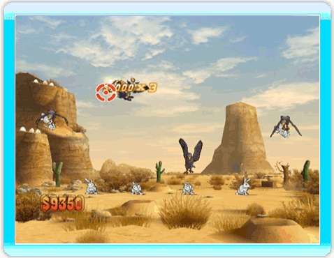
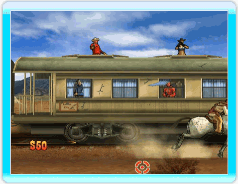

23 |
Jeux de tir |
 |
On voit souvent des sombreros voler dans les airs. Testez vos réflexes et gagnez de l’argent en tirant dessus quand ils passent au-dessus de vous. Il vous faudra parfois tous les canarder. Astuce ⇨ Plus vous les dégommez vite, plus vous gagnez d'argent ! Tirez sur les cibles au fur et à mesure qu’elles apparaissent. Les dorées rapportent plus d’argent mais faites attention aux rouges : elles vous feront perdre de l’argent ! Astuce ⇨ Les rouges sont à éviter absolument ! Et faites attention : certaines cibles disparaissent très rapidement ou pivotent sur elles-mêmes pour laisser apparaître une cible rouge à la place.
Vous voulez vous amuser comme un gamin ? Ces montgolfières semblent être des cibles parfaites. Mais attention ! Certaines sont bourrées de dynamite. Cela dit, vous pouvez utiliser le souffle de leur explosion à votre avantage. Astuce ⇨ Tirez sur plusieurs montgolfières de la même couleur à la suite pour gagner plus d’argent. Quel sport avait le plus de succès au Far West ? Le tir sur boîte de conserve, bien sûr ! Et comme si ce n’était pas assez difficile comme ça, au fur et à mesure que la difficulté augmente, vous devrez les maintenir en l’air pendant un certain laps de temps sans les faire tomber ! Astuce ⇨ Gardez-les en l'air le plus longtemps possible pour gagner encore plus d’argent. Et attention aux savants fous ! Leur fumée vous empêchera de voir correctement et vous aurez plus de mal à toucher les boîtes de conserve. Les lapins sont des créatures si gentilles, et si innocentes... Vous ne pouvez pas rester les bras croisés alors que des vautours tentent de les capturer. Soyez attentifs, car ils volent de manière assez aléatoire. Astuce ⇨ Parfois, les lapins sont attaqués par en-dessous, alors surveillez aussi le sol.  Des bandits dans le saloon ? En tant que U.S. Marshal, vous devez faire régner l'ordre. Réglez rapidement leur compte aux bandits si vous ne voulez pas qu’ils vous tirent dessus ! Astuce ⇨ Attention au géant indien. S’il vous attrape, il risque de vous secouer comme un prunier !
Débarrassez le train des bandits ! Tirez-leur dessus dès qu’ils se montrent. Liquidez-les rapidement si vous ne voulez pas qu’ils vous tirent dessus ! Astuce ⇨ Faites attention à ce que vous visez... Ne tirez pas sur la danseuse de French cancan habillée de rouge ou vous perdrez de l’argent !  |


 |
 |
 |